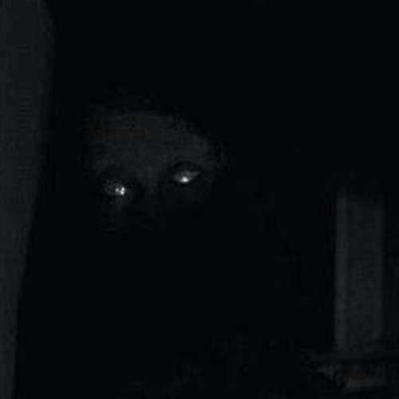
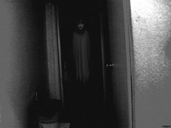

HISTORIAS DE DEMONIOS
Explora relatos reales y ficticios sobre demonios enviados por nuestros lectores...

Lo que Respondió Cuando Recé al Revés
Una broma entre amigos terminó invocando algo que nunca debió responder.
[Leer Más]
La Silla del Visitante
Una simple silla vacía se convirtió en el lugar favorito de algo que no pertenece a este lado.
[Leer Más]
El Nombre que Nunca Debiste Decir
Un nombre extraño aprendido por accidente abrió una puerta que nunca volvió a cerrarse.
[Leer Más]